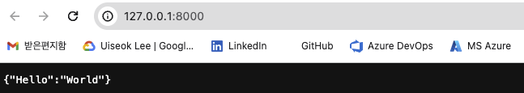
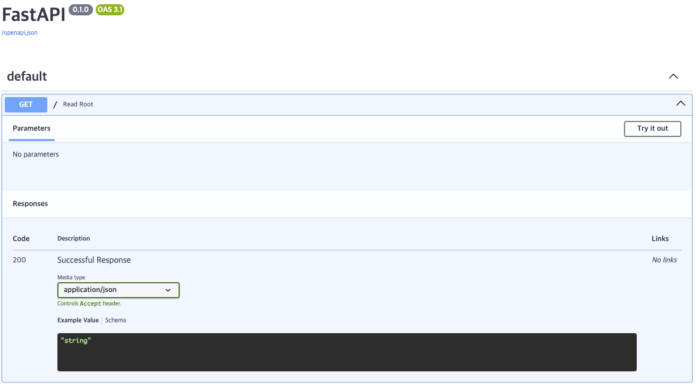

MLOps for MLE - 9
Summary
- FastAPI 의 공식 문서를 참고하여 간단한 API 제작
실습을 진행했던 코드를 보고싶으시다면 여기를 눌러주세요
실습
1. FastAPI 를 이용해 간단한 API 만들어보기
1.1 main.py
다음과 같이 main.py 를 작성
# main.py
from fastapi import FastAPI
# Create a FastAPI instance
app = FastAPI()
@app.get("/")
def read_root():
return {"Hello": "World"}1.2 실행
$ uvicorn main:app --relaod - uvicorn : FastAPI 를 실행하는 웹 서버 실행 Command Line Too - main : 위에서 작성한 Python 모듈 main.py 를 의미 - app : main.py 에서 app = FastAPI() 를 통해 생성된 객체를 의미 - –reload : 코드가 바뀌었을 때 서버가 재시작할 수 있도록 하는 옵션

main.py 실행 화면
이는 Swagger UI 에 의해 제공되는 interactive API documentation 임
2. Step by Step 으로 이해하기
2.1 Step 1: Import FastAPI
from fastapi import FastAPI
API 를 만들 수 있도록 도와주는 Python 클래스
2.2 Step 2: Create a FastAPI instance
FastAPI 클래스의 인스턴스를 생성된
여기서 생성하는 인스턴스의 이름에 따라 uvicorn main:app --reload 과 같은 형태로 실행 명령어가 달라짐
app = FastAPI()
2.3 Step 3: Create a Path Operation
여기서 말하는 path 는 URL 에서 첫 번째 / 부터 시작되는 마지막 부분을 의미함
Ex) https://example.com/items/foo 에서 /items/foo 에 해당함
Operation 은 POST, GET, PUT, DELETE 등과 같은 HTTP Method 를 의미함
이러한 Operation 을 수행하기 위해 @app.get("/") 와 같은 Path Operation Decorator 를 사용
@app.get("/") 은 FastAPI 로 하여금 path / 로 가서 GET operation 을 수행하라는 의미로 사용할 수 있음
2.4 Step 4: Define the Path Operation Function
Path Operation Function 은 Path Operation 이 수행되었을 때 호출될 Python 함수를 말함
@app.get("/")
def read_root():
return {"Hello": "World"}2.5 Step 5: Return the content
Path Operation Function 을 통해 return 하는 값으로는 dict, list, str, int 등이 가능
또한, 뒤에서 나올 Pydantic Model 의 형태로도 return 할 수 있음
3. Path Parameter 이해하기
Path parameter 는 Path Operation 에 포함된 변수로 사용자에게 입력받아 function 의 argument 로 사용되는 parameter 를 의미함
다음과 같이 코드를 작성하고 uvicorn path_param:app --reload 를 입력하여 실행함
# path_param.py
from fastapi import FastAPI
# Create a FastAPI instance
app = FastAPI()
@app.get("/items/{item_id}")
def read_item(item_id: int):
return {"item_id": item_id}item_id 와 같은 parameter 를 Path parameter 라고 함, 여기서 입력된 Path Parameter 의 값은 function 에 argument 로 전달되어 함수가 호출됨
def read_item(item_id: int) 와 같이 type 을 제공할 수 있음
만약 다른 type 의 데이터가 입력되면 HTTP Error 를 return 하게 됨
4. Query Parameter 이해하기
Query Parameter 는 function parameter 로는 사용되지만 Path Operation 에 포함되지 않아 Path Parameter 라고 할 수 없는 parameter 를 의미함
다음과 같이 코드를 작성하고 uvicorn query_param:app --reload 를 입력하여 실행함
# query_param.py
from fastapi import FastAPI
# Create a FastAPI instance
app = FastAPI()
fake_items_db = [{"item_name": "Foo"}, {"item_name": "Bar"}, {"item_name": "Baz"}]
@app.get("/items/")
def read_item(skip: int = 0, limit: int = 10):
return fake_items_db[skip : skip + limit]function 에 parameter 로 들어있는 skip 과 limit 이 Path Operation 인 @app.get("/items") 에 들어있지 않음
Query 는 URL 에서 ? 뒤에 key-value 쌍의 형태로 나타나고, & 로 구분되어 사용됨
Ex) http://localhost:8000/items/?skip=0&limit=10 과 같은 형태로 사용
Query Parameter 는 path 의 고정된 부분이 아니기 때문에 optional 로 사용될 수 있고 기본값을 가질 수 있음
위의 예시에서는 skip=0 과 limit=10 의 기본값을 가지고 있음
하지만 값을 입력받아야만 하는 Query Parameter 도 존재함
이를 Required Query Parameter 라고 하고 다음과 같은 형태로 사용됨
@app.get("/items/{item_id}")
def read_user_item(item_id: str, needy: str):
item = {"item_id": item_id, "needy": needy}
return item위의 예시에서 needy 는 Path Operation @app.get("/items/{item_id}") 에 포함되어 있지 않으므로 Query Parameter 이고, function read_user_item() 에서 기본값이 존재하지 않기 때문에 Required Query Parameter 임을 알 수 있음
이러한 경우 http://localhost:8000/items/foo-item?needy=someneedy 와 같은 형태로 ? 뒤에 입력을 해주어야 에러가 발생하지 않고 함수가 제대로 동작함
5. Multiple Path and Query Parameters 사용해보기
Multiple Path and Query Parameter 참고
# multi_param.py
from typing import Union
from fastapi import FastAPI
# Create a FastAPI instance
app = FastAPI()
@app.get("/users/{user_id}/items/{item_id}")
def read_user_item(user_id: int, item_id: str, q: Union[str, None] = None, short: bool = False):
item = {"item_id": item_id, "owner_id": user_id}
if q:
item.update({"q": q})
if not short:
item.update(
{"description": "This is an amazing item that has a long description"},
)
return item먼저 Path Operation 을 보면 @app.get("/users/{user_id}/items/{item_id}") 로 되어 있음
이를 통해 user_id 와 item_id 라는 Path Parameter 가 있음을 알 수 있음
Path Operation Function 의 parameter 를 보면, user_id, item_id, q, short 가 있음을 알 수 있음
Path Parameter 가 아닌 q 와 short 는 Query Parameter 임을 알 수 있고 각각 기본값이 None, False 임을 알 수 있음